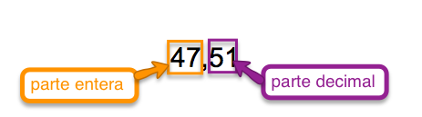
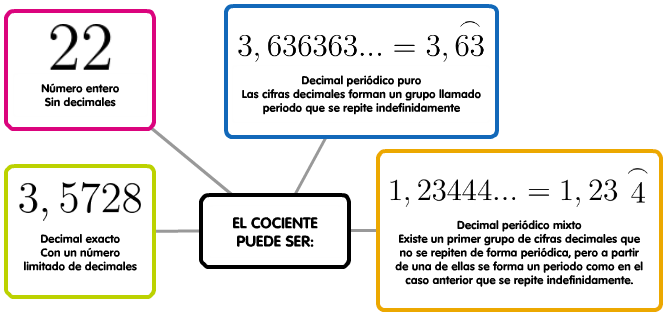

3.1 Expresión decimal de una fracción
| Imagen en Flickr por Sarah Joy bajo CC |
Como ya hemos visto, los números enteros no son suficientes para expresar todas las situaciones de la vida cotidiana. Precisamente utilizamos las fracciones para expresar partes de un total y las expresamos como una división sin realizar; pero... ¿qué ocurre si efectuamos dicha división entre el numerador y el denominador y obtenemos un resultado con resto distinto de 0? ¿Podemos seguir repartiendo el resto sobrante?
La respuesta es afirmativa, y obtendríamos un número decimal.
Los números decimales forman parte de nuestra rutina, puede que incluso más que las fracciones. Usamos los números decimales cuando pagamos con monedas de céntimo: esto cuesta 3,45 €, cuando expresamos nuestra altura: mido 1,62 metros...
Importante
Los números decimales están formados por una parte entera y otra parte decimal, separadas por una coma. Para expresar la parte decimal recurrimos a las unidades decimales (décimas, centésimas, milésimas...):

Donde el 5 son las décimas y 1 las centésimas.
Para pasar de fracción a decimal ya hemos visto que hay que efectuar la división entre numerador y denominador. Aunque lo normal es que recurras a la calculadora para dicha operación, si quieres refrescar la memoria te dejamos el siguiente vídeo.
Una vez realizada la operación el cociente puede ser:

Caso práctico
En el siguiente applet puedes practicar estos conceptos. Para hacer la actividad más ágil, te recomendamos que uses la calculadora para realizar las divisiones:
Escena de J. Rodríguez Villanego en Proyecto Descartes. Licencia CC
Operaciones con números decimales
En la siguiente presentación puedes descubrir cómo se opera con números decimales. Al igual que pasaba con las fracciones las operaciones básicas, conservan las mismas propiedades:
Caso de estudio
- ¿Qué saldo indicaba el comprobante que ha perdido Marcos?
- Al llegar a su casa Marcos encuentra el aviso de cobro de dos domiciliaciones: agua, 32,67 €, y seguro del coche, 437,45 €. Con el dinero que le quede después de esos pagos quiere hacer 3 partes iguales, una para comprar un ordenador que cuesta 380 €, otra para libros y música y la tercera para sus gastos. ¿Podrá comprarse el ordenador?
Curiosidad
Aunque todas las fracciones se pueden expresar en forma decimal, no todos los números decimales se pueden expresar en forma de fracción. Estos números se llaman irracionales, y los estudiaremos más adelante.
Caso práctico
Puedes repasar las operaciones combinadas con decimales con el siguiente applet, eligiendo en el desplegable combinadas:
Escena de Juan Simón Santamaría en Proyecto Descartes. Licencia CC